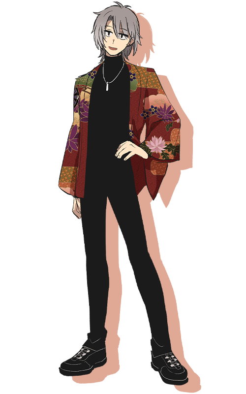

『神様のヒマ潰し』PC3
「次はいけますよ、坊っちゃん！」
「ハードル高い方がお好みだろ？」
流派：比良坂機関 階級：中忍 表の顔：大学生 信念：情
性別：男 年齢：19 身長：178cm 誕生日：12月3日
派手な羽織を羽織ったへらへらした男。
公安隠密局の要職に就く父の元に生まれ、自らも公安に入ることが決まっている。
本家の跡継ぎで幼なじみの葛火焔郎のお守り役。
焔郎が神の血を引く少女・藻に戦いを挑んでは負け続ける様を見守ってきた。
軽薄そうな振る舞いとは裏腹に、自己評価はひどく低い。
保守的で、目上の者によく従う。
武器は鋼線。
仕事の時にはスーツを着る。
好き：お仕事、酒、誠実・一途な人間
苦手：御祀さん、里の外の水道水（まずい……）
back